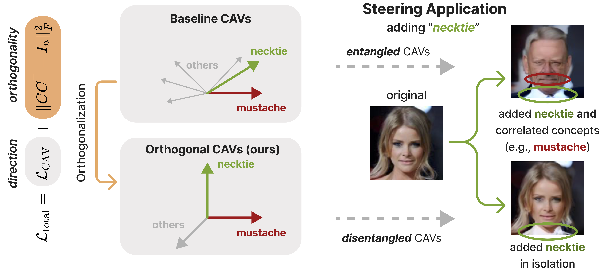
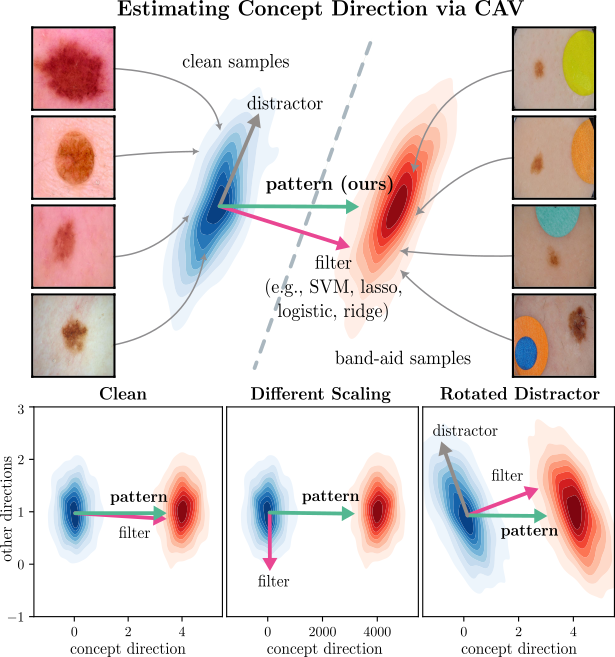
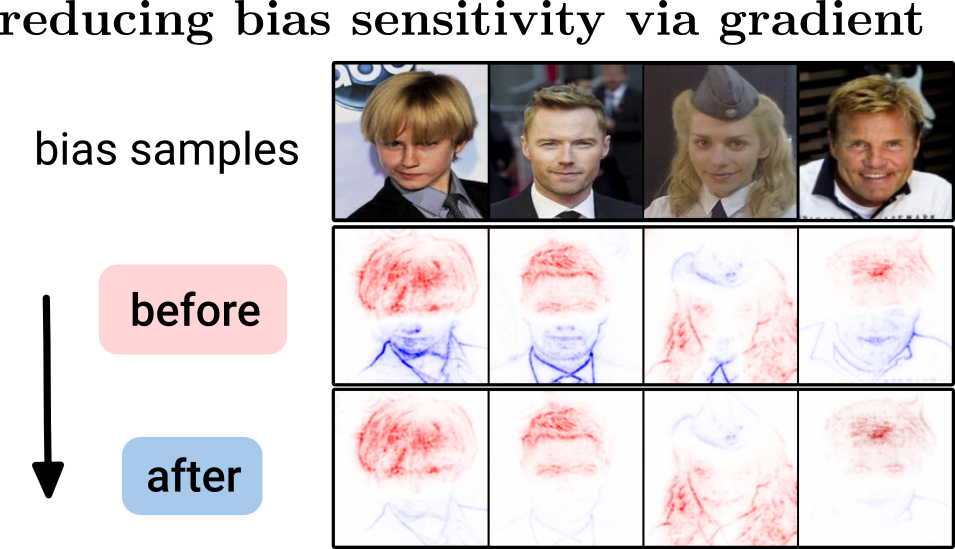
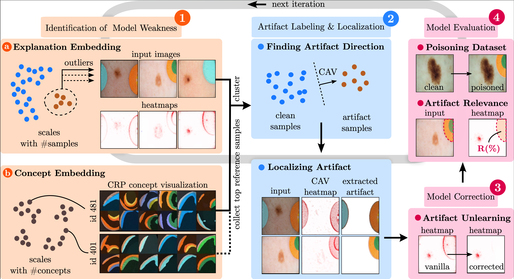
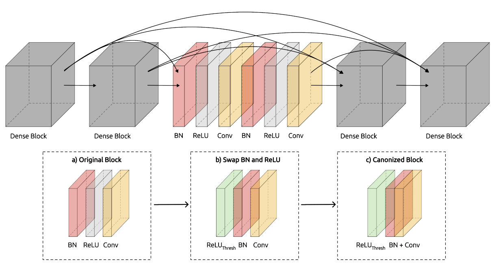
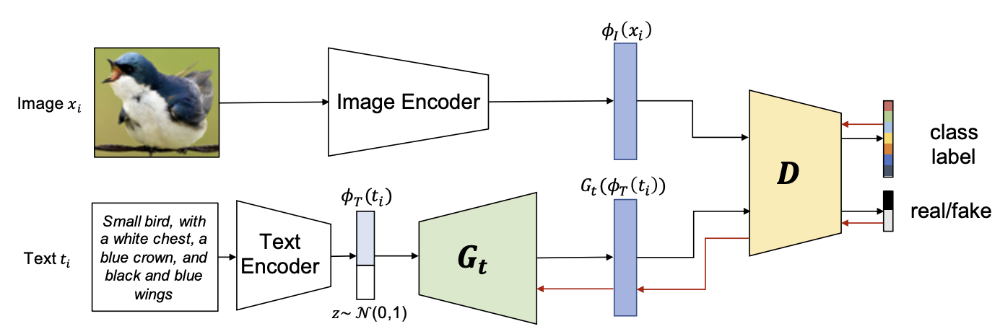
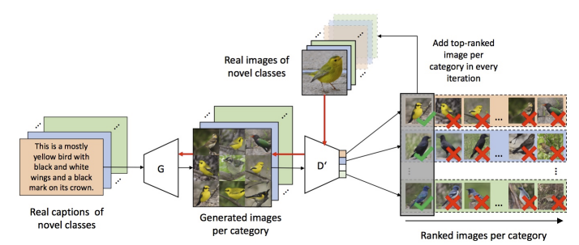

Frederik Pahde
About Me
I am a PhD student in the eXplainable AI (XAI) group at the Fraunhofer Heinrich-Hertz Institute in Berlin, Germany. Under the supervision of Sebastian Lapuschkin and Prof. Wojciech Samek, my research focuses on integrating explainability methods into the AI development life cycle for the detection and mitigation of spurious model behavior, particularly in the field of medical applications such as AI-based Melanoma detection.
Prior to joining Fraunhofer, I had the opportunity to work as an Applied Machine Learning Scientist at Amazon in Edinburgh, Scotland (2019-2021) and as a Research Associate in the machine learning research team at SAP SE in Berlin, Germany (2017-2019).
If you have any questions or are interested in collaborating on research projects, please feel free to reach out to me. I look forward to connecting with you!
Research Interests
- XAI Life Cycle: Integration of XAI into the machine learning development cycle
- Model Correction: Unlearning model shortcut behavior caused by data artifacts
- Concept-based XAI: Explaining AI model predictions with human-understandable concepts
- AI in Medicine: XAI for AI-based Melanoma detection
Publications
-
 XAIarXiv preprint arXiv:2503.05522 (2025).
-
 arXiv
arXiv preprint arXiv:2501.13818 (2025).
arXiv
arXiv preprint arXiv:2501.13818 (2025). -
 ICLRarXiv preprint arXiv:2202.03482 (2024).
-
 AAAIThe 38th Annual AAAI Conference on Artificial Intelligence (AAAI), 2024.
-
 MICCAIInternational Conference on Medical Image Computing and Computer-Assisted Intervention (MICCAI), 2023.
-
 CVPRWProceedings of the IEEE/CVF Conference on Computer Vision and Pattern Recognition (CVPR) Workshops, 2023.
-
 WACVIEEE/CVF Winter Conference on Applications of Computer Vision (WACV), 2021.
-
 WACVIEEE/CVF Winter Conference on Applications of Computer Vision (WACV), 2019.
Powered by Jekyll and Minimal Light theme.